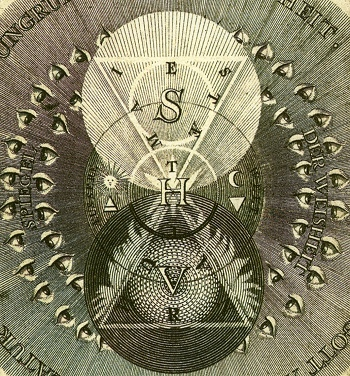

Sacred Texts Sub Rosa
Buy this Book at Amazon.com
|  | Code of the IlluminatiPart III ofMemoirs Illustrating the History of Jacobinismby Abbé Barreultr. by Robert Edward Clifford[1798] |
This is the third part (of four) of Abbé Barreul's massive polemic history of the French Revolution. This portion of this book is of interest because it contains extensive quotes from the actual literature of the Bavarian Illuminati. This is the most comprehensive work in English on the historical theory, structure and practice of the Bavarian Illuminati. It complements Robison's Proofs of a Conspiracy, the other major contemporary account.
Founded in 1776, shortly before the American Revolution, the Bavarian Illuminati were a secret society with a revolutionary ideology, and a centralized structure. According to Abbé Barreul, they subverted the Masonic lodges of Europe, and were one of the key driving forces behind the French Revolution. New members were gradually initiated into the group's radical ideas, which, according to Barreul, were atheist and anarchist in essence.
Barreul was very conservative, and his translator, Robert Edward Clifford, likewise. However, Barreul was a serious historian, even though he wrote from a decidedly non-neutral point of view. As a contemporary, he was able to view the primary source documents and interview participants. As such this book is today, in and of itself, a primary source.
Today, civil society in Europe and America has enshrined the ideas of 'Liberty and Equality' that Barreul thought would lead to the complete breakdown of civilization. The Bavarian Illuminati are considered by some to be the forerunners of the Communist and Fascist movements. However, as I have stated before, this is probably parallel evolution. The more paranoid believe that the Illuminati (or some equivalent, such as a cabal of reptilian shape-shifters) are still in business and manipulating, e.g., world leaders, the education system, and mass movements. But this is for the individual reader to decide... --J.B. Hare, May 11th, 2008.